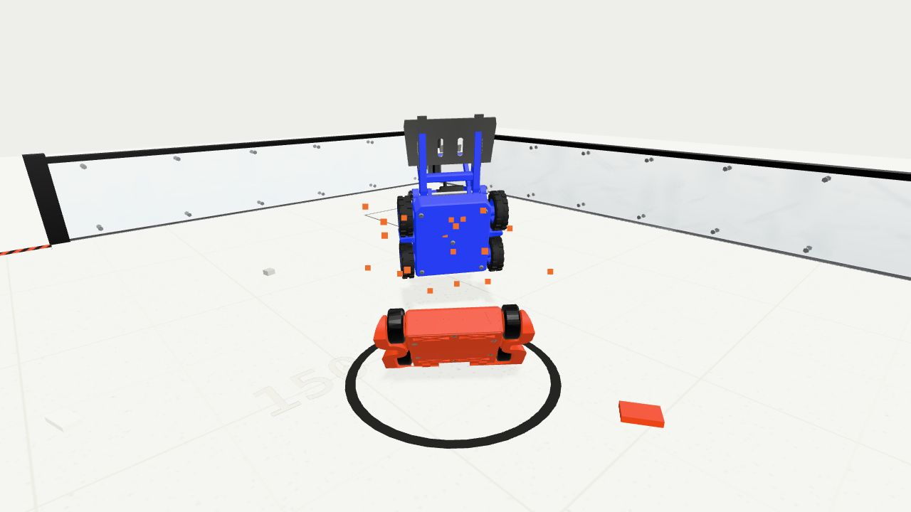
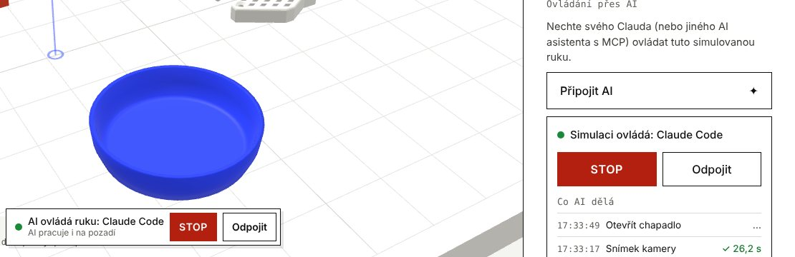

Postavte si robotickou ruku SO-101. Nejdřív ji vyzkoušejte v prohlížeči.
Simulaci spustíte zdarma a bez registrace. Až budete chtít skutečnou ruku, řekneme vám, které díly koupit a ve kterém obchodě, a provedeme vás stavbou. Díly kupujete sami, my nic neprodáváme.
- Díly
- 369–390 € za pár rukou s dopravou, díly tisknete sami; jedna ruka 191–209 €
- Ceny ověřené
- 30. 10. – 7. 11. 2026
- Dodání
- ≈ 21 dní
- Čas
- tiskárna ≈ 16,5 h, vaše práce 10–19 h
- Potřebujete
- 3D tiskárnu (nebo tiskový servis) a počítač s Pythonem
sim.try()Tři kroky k vlastní ruce. Než utratíte korunu, vyzkoušíte si je v prohlížeči.
- 01
sim.try()Vyzkoušejte
Táhnete modrou kouli a ruka ji sleduje, kliknete na kostku a ruka ji vezme. Pak projdete deset misí od přenesení kostky po laboratoř: pohyb nahrajete a ruka ho zopakuje, stejně jako při učení skutečné SO-101 s LeRobotem.
Spustit simulaci - 02
plan.parts()Nakupte díly
SO-101 se staví jako pár: ovládací rukou (leader) hýbete vy a výkonná ruka (follower) ji kopíruje. Díly koupíte přímo u dodavatelů podle našeho plánu. U každé ceny je datum ověření a plán vám pomůže zkontrolovat variantu serv.
Otevřít plán nákupu - 03
build.arm()Postavte
Rozložený pohled z originálních STL ukáže každý díl. ID serv, kalibraci a test si projdete na virtuální ruce, ještě než díly dorazí.
Nastavení serv nanečisto
Mise 06–10: skutečné předměty s fyzikou
- 59 naskenovaných předmětů s hmotností a třením: jídlo, nádobí, nářadí, laboratorní sklo.
- Ruku chytíte tahem za kterýkoli článek, klepnutím na čelisti otevřete nebo zavřete chapadlo.
- V misi s perem kreslíte prstem nebo myší, pomáhá pohled shora.
build.arm()Sedm etap, odhad 10 až 19 hodin práce.
stage_0Před stavbouNářadí, místo a kontrola serv1–2 hstage_1TiskTisk dílů a odstranění podpor1,5–3 h+ tiskárna ≈ 16,5 hstage_2ID servKaždé servo dostane vlastní ID, ještě před montáží1–2 hstage_3MechanikaKloub po kloubu: základna, rameno, loket, zápěstí, chapadlo4–8 hstage_4ElektronikaŘetěz serv, řídicí deska a napájení0,5–1 hstage_5První pohybKalibrace a teleoperace1–2 hstage_6Simulace a realitaCo si dnes vyzkoušíte v simulaci a co ne0,5–1 hvolitelné
celkem10–19 h práce+ tiskárna ≈ 16,5 h
Otevřít návod ke stavběarena.fight()Roboti do 150 g. Zápas si nejdřív odehrajete v aréně.

Fyzika s hmotností a třením, několik map, kamery včetně TV přenosu. Rychlý zápas, turnaj, dva hráči na jedné klávesnici nebo trénink bez časového limitu.
- V garáži měníte kola, převody a zbraně, hmotnost se hlídá do 150 g.
- Project SVRN má vpředu výměnný modul: flipper, klín nebo chapadlo. Soupeři Kosa a Klepeto mají vlastní původní modely.
- Po zápase si zásah přehrajete zpomaleně a zápas uložíte jako soubor nebo krátký klip.
- První zápas provede krátký průvodce, soupeř Začátečník reaguje pomaleji. Motory, zbraně a zásahy mají vlastní zvuk.

ai.connect()Ruku v simulaci může řídit váš Claude.
Claude nebo jiný asistent s podporou MCP dostane nástroje k ovládání simulované SO-101: pohyb kloubů, chapadlo, snímek kamery a mise. Ruka se hýbe ve vaší záložce, i když je na pozadí.
- Jednou přidejte server do Claude Code:
claude mcp add --transport http printedrobotics https://mcp.printedrobotics.cz/mcp - Otevřete simulaci a v panelu klikněte na Připojit AI. Zobrazí se kód.
- Řekněte Claudovi kód a v záložce povolte připojení.
Zkuste říct Claudovi
- „Seber kostku a polož ji do misky.“
- „Zatanči s rukou.“
- „Vyřeš misi 3.“
- „Ukaž mi snímek shora.“

log.latest()Co jsme přidali.
- Humanoid ROBOTO ORIGIN v prohlížečiOtevřený humanoid od RoboParty chodí v simulaci podle politiky, kterou autoři natrénovali a zveřejnili. Řídíte ho klávesami nebo joystickem a můžete do něj strčit. Je to ukázka: díly neprodáváme a s RoboParty nejsme spojeni.Simulace
- Ovládejte simulaci přes AIClaude nebo jiný klient MCP ovládá simulovanou SO-101 ve vaší záložce, i když je na pozadí. V panelu klikněte na Připojit AI a pošlete AI zobrazený kód.Simulace
- Mise 06–10 s předmětyTřídicí linka, snídaně, uklizený stůl, dílna a laboratoř. 59 naskenovaných předmětů s fyzikou (NVIDIA SimReady a Google Scanned Objects, CC BY 4.0).Předměty
Všechny novinky (9)
- Web v angličtiněKatalog, stránky sad, kvíz, návody i obě simulace jsou i anglicky. Jazyk přepnete v záhlaví.English
- Pro školy a návody45minutová hodina se simulací SO-101, pracovní list k tisku a hodnoticí tabulka. K tomu návody česky: SO-101 a LeRobot, bojoví roboti 150 g, licence.Pro školy
- Project SVRN s výměnnými modulyV aréně má SVRN vpředu flipper, klín nebo chapadlo. Modul vyberete v garáži, fyzika se mění s ním.Aréna
- Záznamy zápasů v aréněOpakování zásahu, zpomalení, uložení zápasu a krátký klip k odeslání.Aréna
- Aréna: zvuk a první zápasMotory, rotující zbraně a zásahy mají nový zvuk. První zápas provede krátký průvodce, soupeř Začátečník reaguje pomaleji.Aréna
- Ruka na dotekTáhnete za libovolný článek a otáčí se jeho kloub. Klepnutím na čelisti chapadlo otevřete nebo zavřete, v misi s perem kreslíte prstem.Simulace
roadmap.next()Na čem pracujeme. Zatím to vyzkoušet nejde.
- Připravujeme
Skutečná ruka podle simulace
Digitální dvojče v prohlížeči bude řídit vaši skutečnou SO-101. Chceme, aby limity kloubů a rychlosti hlídal software.
- Připravujeme
Konstruktor bojových robotů
Robota navrhnete v prohlížeči a otestujete v aréně.
kits.list()24 robotů a 4 laboratorní přístroje. Od prvního sestavení po výzkum.

SO-101
Robotická ruka5 + chapadlo · LeRobotRuka s pěti osami a chapadlem pro AI a teleoperaci s knihovnou LeRobot. Pár ovládací + výkonná ruka.
Detail sady
LeKiwi
Mobilní manipulátor3× omni kolo · Raspberry Pi 5Holonomní tříkolová základna s rukou SO-101, Raspberry Pi 5 a dvěma kamerami.
Detail sady
XLeRobot
Dvouruký domácí robot2× SO-101 · VR, gamepadDvě ruce SO-101 na mobilní základně. Teleoperace přes VR či gamepad.
Detail sady
Open Duck Mini v2
Dvounohý robot≈ 42 cm · RPi Zero 2WMalý chodící robot řízený RL politikou. 51 tištěných dílů včetně TPU.
Detail sady
Otto DIY
Výukový robot4× SG90 · Arduino NanoMalý chodící robot pro školy a kroužky — pod vedením dospělého.
Detail sady
Sawppy
Rover6, rocker-bogie · LX-16AŠestikolový rover podle marsovských vozítek.
Detail sady
SO-ARM 102
Robotická ruka300 g · 483 mmTužší a rychlejší nástupce SO-101. Paralelní chapadlo, díly z PET-CF a stejná kinematika pro LeRobot.
Detail sady
Project SVRN
Bojový robot 150 gdo 150 g · 4× N10Modulární bojový robot do 150 g: tlačný robot (pusher) s pohonem 4×4, k tomu flipper nebo chapadlo.
Detail sady
UC2
Modulární optická stavebnice50 mm · mikroskop pro telefonOptické pokusy z tištěných kostek o hraně 50 mm. Model ukazuje jednoduchý mikroskop pro chytrý telefon.
Detail sadyVšech 309 tisknutelných projektů v rejstříku
Nevíte, kterého vybrat?Tři otázky a doporučíme robota podle zkušeností a cíle, nově i pro souboje robotů.Najít robota ve 3 otázkáchdocs.read()Hodina robotiky zdarma a návody česky.
Pro školy
Hotová 45minutová hodina se simulací SO-101, pracovní list k tisku a hodnoticí tabulka. Zdarma, v prohlížeči, bez účtů a instalace.
Hodina a pracovní listNávody
SO-101 a LeRobot: první kroky. Jak začít s bojovými roboty 150 g. Licence open-source hardwaru srozumitelně.
Všechny návody
meetup.join()PROTO ROBOT
Pražské setkání o robotice a fyzické AI: přednášky, živé ukázky a lidé, kteří roboty staví nebo chtějí začít. První proběhlo 23. 10. 2026, další připravujeme.
Program na protorobot.czlicense.check()Hotovou sadu jen tam, kde to licence dovoluje.
Licenci konstrukčních souborů ověřujeme zvlášť od licence softwaru. Kdybychom hotovou sadu někdy nabídli, projekty s doložkou NC jen s písemným souhlasem autorů.
Tabulka licencí
| Licence hardwaru | Prodej sady | Naše povinnost |
|---|